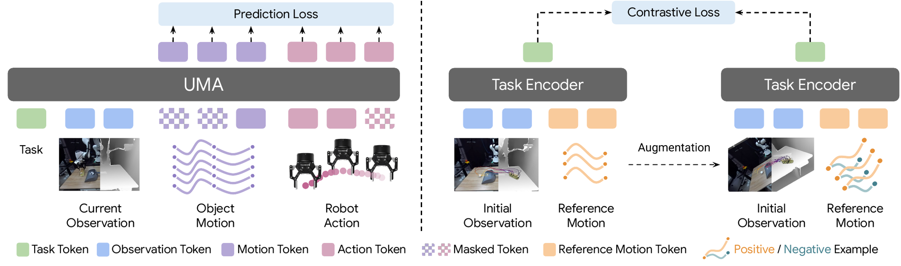
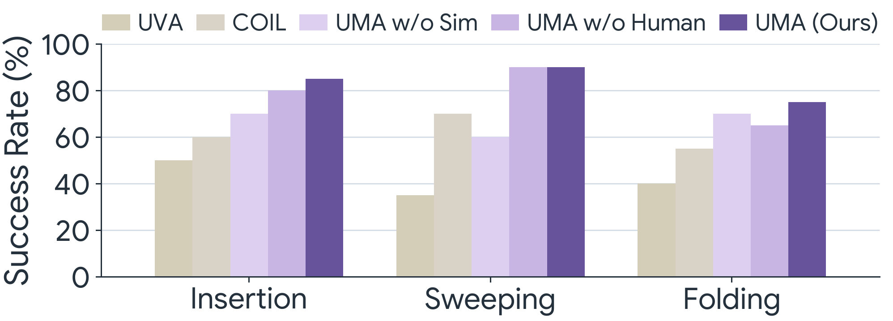
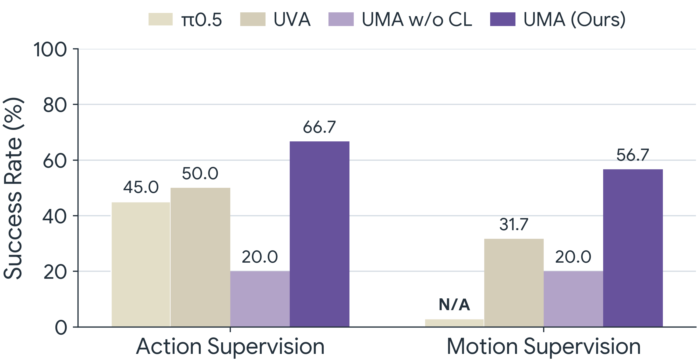
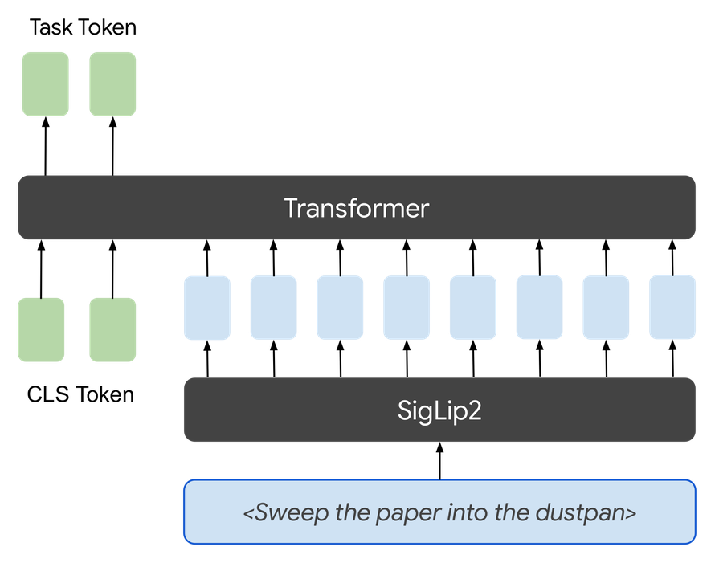
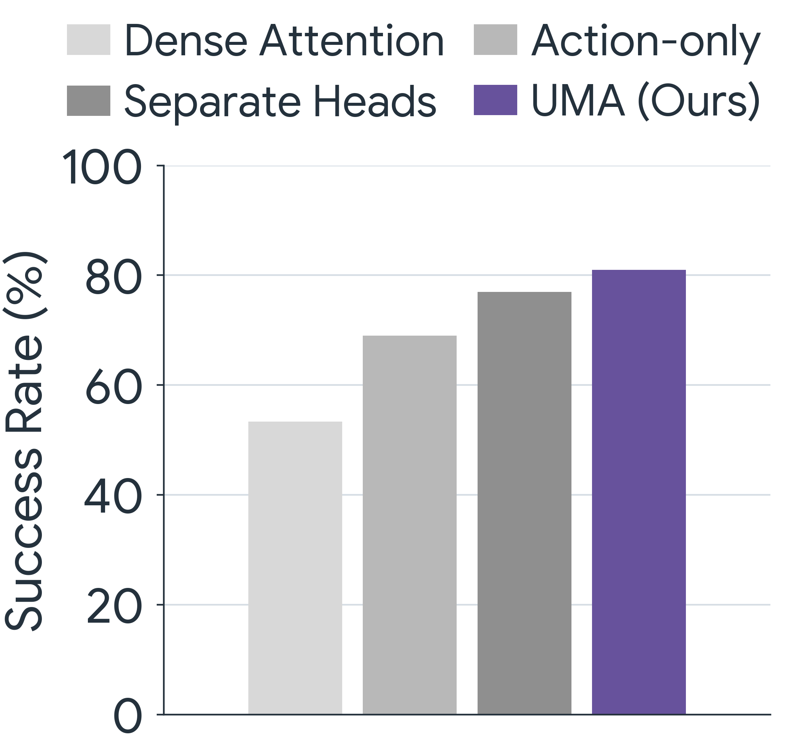
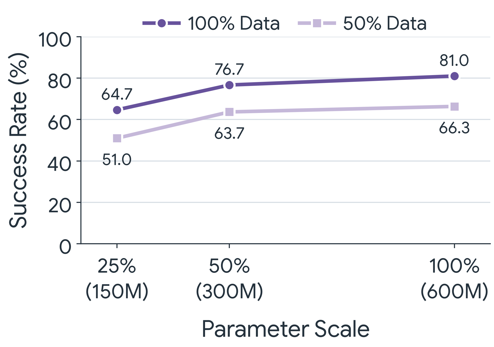
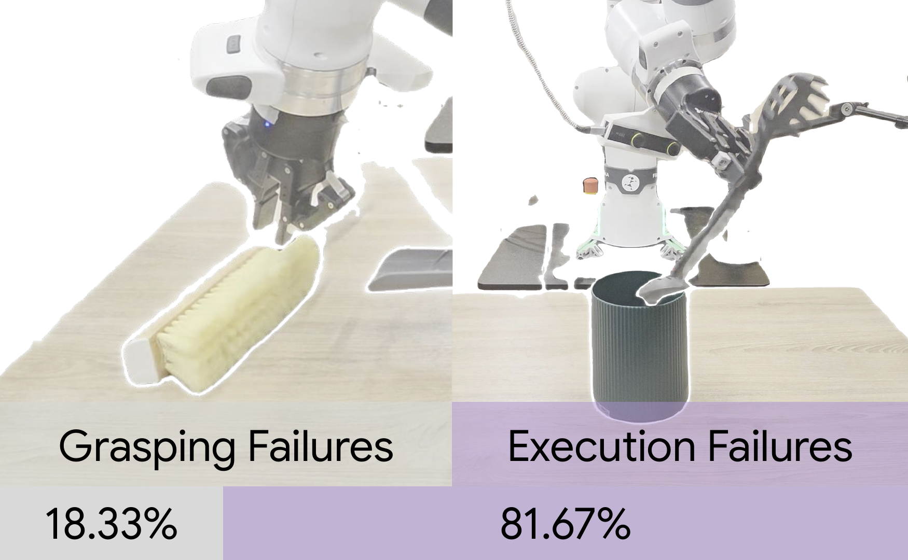

UMA uses 3D object motion as a shared interface for heterogeneous robot learning. A single masked generative model combines action-free videos, real robot data, and simulated robot data during pretraining. The same pretrained parameters then support visuomotor control, dynamics modeling, and task inference, unifying capabilities that prior methods address separately.
We present Unified Motion-Action (UMA) Model, an approach that uses 3D object motion trajectories as a shared interface to bridge visuomotor control and dynamics modeling. UMA treats object motion and robot actions as co-evolving variables under a masked generative objective, in which the mask pattern determines both the supervision regime during pretraining and the inference mode at deployment. Using hindsight-relabeled motion contexts and a contrastive objective that disentangles task intent from scene geometry, UMA enables multi-task pretraining across heterogeneous data sources without requiring manually annotated task instructions. At deployment, the same pretrained parameters support motion-conditioned visuomotor control, motion-based dynamics modeling, and task adaptation from few-shot demonstrations. Pretrained on a mixture of robot demonstrations, human videos, and simulated data, UMA consistently outperforms state-of-the-art baselines specialized for each inference mode.
UMA pretrains on action-free human videos, real robot data, and simulated robot data under a single objective, using object motion as the common ground that ties them together. This lets one model absorb supervision from various sources and then serve multiple roles at deployment.

UMA rethinks pretraining for robotic foundation models around three ideas:
- 3D object motion as a structured yet generic interface. Object motion is represented as 3D keypoints from monocular video, which keeps it independent of embodiment and in the same coordinate frame as robot actions. This gives every data source, whether human video, real robot, or simulation, a common and physically grounded representation to share.
- Motion and action as co-evolving variables in a unified generative model. UMA treats object motion and robot actions as two views of the same physical interaction and models them jointly. A single masked generative objective reconstructs randomly masked motion and action tokens. The mask pattern decides the supervision and inference mode.
- Consistent task tokens via hindsight relabeling + contrastive learning. We train the task token to capture abstract intent while staying invariant to keypoint sampling, timing, and scene placement. This consistency lets the task token transfer across scenes and be swapped for other task specifications at deployment.
In motion-conditioned visuomotor control, a task encoder turns the initial observation of a new scene and a reference object motion into a task token. Conditioned on this token and the current observation, UMA generates robot actions directly, predicting an action chunk and updating it from each new observation in closed loop.

Success rates for motion-conditioned visuomotor control on each of the three evaluation tasks.
In novel testing tasks, UMA outperforms the strongest baseline by 20 to 25 percentage points without task-specific finetuning. Predicted end-effector trajectories are overlaid in the qualitative videos.
Insertion. 6-DoF manipulation
Sweeping. Tool use
Folding. Deformable object manipulation
Conditioned on a candidate action sequence instead of generating one, the same pretrained model becomes a dynamics predictor. It forecasts the resulting 3D object motion, which supports model-predictive control by scoring candidate actions against the reference motion and reveals whether predicted dynamics match the task intent before any action is executed.
| Method | MSE ↓ |
|---|---|
| PointWorld | 0.054 |
| UMA w/o Sim | 0.208 |
| UMA w/o Human | 0.044 |
| UMA (Ours) | 0.042 |
Mean squared error (MSE) of predicted object motion, averaged across real-world tasks. Lower is better.
UMA outperforms the state-of-the-art motion-based dynamics model, by unifying motion and action modeling to leverage both simulated robot data and action-free human videos.
Insertion. 6-DoF manipulation
Sweeping. Tool use
Folding. Deformable object manipulation
To handle tasks beyond the zero-shot setting, UMA adapts by optimizing only the low-dimensional task token on a small set of demonstrations, a form of soft prompt tuning that keeps all other parameters frozen.

Success rates for adapting to new tasks from 25 demonstrations under action supervision and motion supervision.
Adapted from human videos. When the demonstrations are action-free human videos recorded in the test scene, only the motion prediction term supervises the task token (motion supervision). UMA converts the observed object motion into executable robot actions, drawing on action knowledge acquired during pretraining.
Action-free human videos.
Rollout with adapted task tokens.
Adapted from robot demos. When the demonstrations are teleoperated robot trajectories, both the motion and action prediction terms supervise the task token (action supervision), giving the most direct route to a new behavior.
Robot demonstrations.
Rollout with adapted task tokens.
Since the contrastive objective trains the task token to capture intent independently of how that intent is specified, the same pretrained model can be driven by entirely different task inputs simply by swapping the task token, with no fine-tuning and no change to the denoising transformer.
Instruction following. A natural-language description of the task is encoded by a text encoder aligned to the same latent space during training, and the resulting task token drives the policy directly with no reference motion required.

Language instruction: “Put the cable in the container.”
Goal reaching. Given an image of the desired final scene, UMA estimates correspondences between the current and goal images to recover a start-to-end reference motion, encodes it into a task token, and conditions the same policy on it.

Goal image: Shelving the mug
Beyond the three benchmark tasks, the same pretrained UMA model handles a wide range of everyday objects and skills.
Inserting the utensil
Sweeping the paper
Folding the jean
Shelving the mug
Unloading the toaster
Wrangling the cable
Tucking away the shoe
Gathering the carrot
Parking the toy car
Our analysis isolates the design choices that matter, confirms that UMA scales with both data and model size, and traces its remaining errors to execution rather than perception.

Model design. Across three simulated tasks, jointly predicting motion alongside actions is essential, with Action-only trailing badly on tool use. A shared head captures motion-action coupling better than Separate Heads, and structured attention outperforms Dense Attention at matched compute.

Scaling study. Average success across simulated tasks increases with both training-data scale and model size. UMA achieves reasonable performance with fewer parameters and demonstrations, while the full model trained on all available data achieves the highest performance.

Failure modes. Execution failures account for 82 percent of errors and grasping for 18 percent. UMA reliably identifies the correct task intent and grasp but loses precision during the rollout, which points to more motion-action paired data as the most direct path to closing the gap.
We gratefully acknowledge use of the research computing resources of the Empire AI Consortium, Inc, with support from Empire State Development of the State of New York, the Simons Foundation, and the Secunda Family Foundation. This work was supported in part by the Amazon Research Awards, an NVIDIA Academic Grant, and NSF CAREER #2339071. We thank Chuanruo Ning, Tianrui Wang, Cory Fan, Xingyi He, Qianxu Wang, Qi Wu, and Pranav Thakkar for their constructive discussions and feedback.
@misc{cao2026uma,
title={Unified Motion-Action Modeling for Heterogeneous Robot Learning},
author={Yunhao Cao and Shitong Liu and Chao Feng and Meryl Zhang and Xuanchen Lu and Andrew Owens and Kuan Fang},
year={2026},
eprint={2606.16917},
}